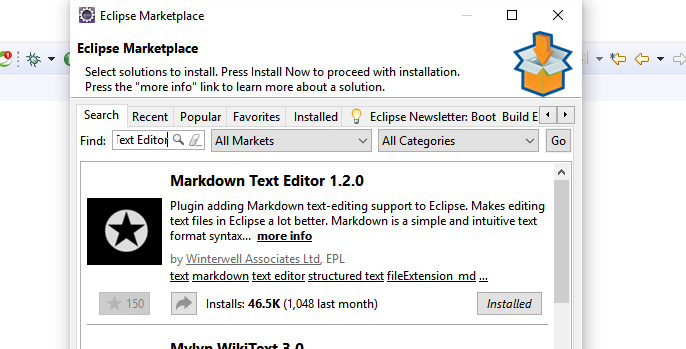
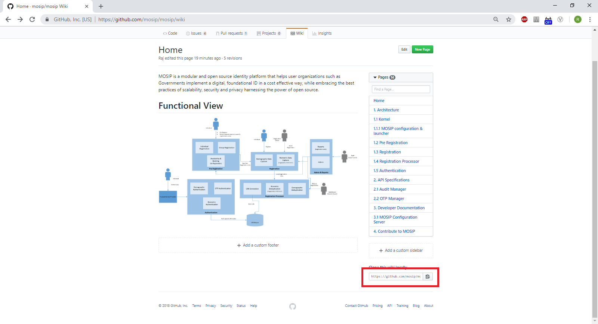
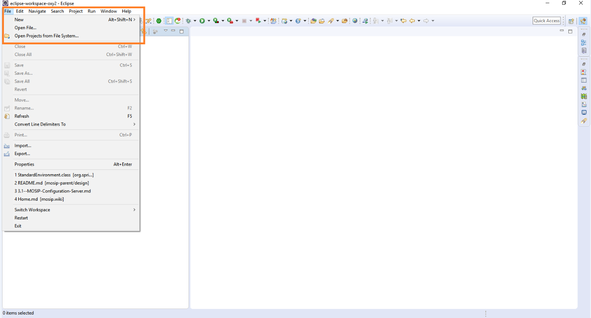
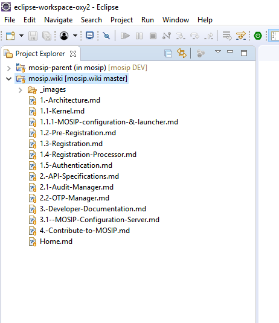
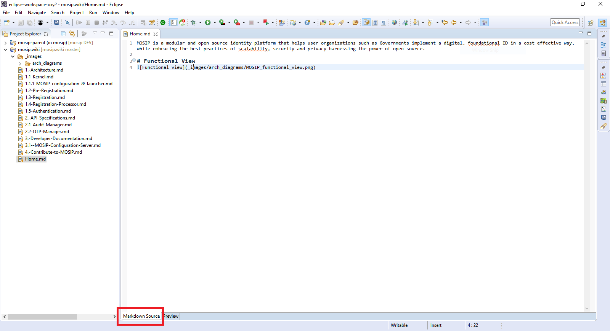
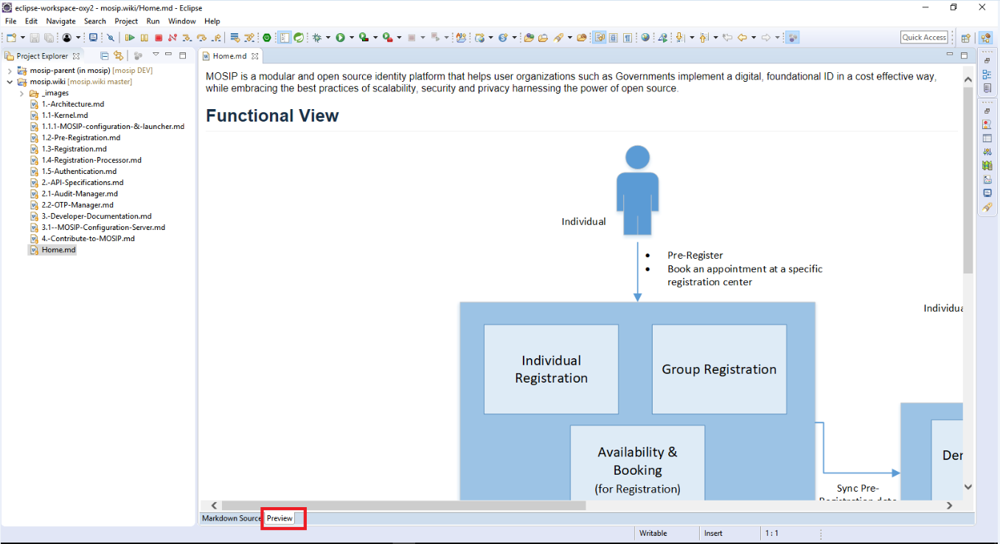
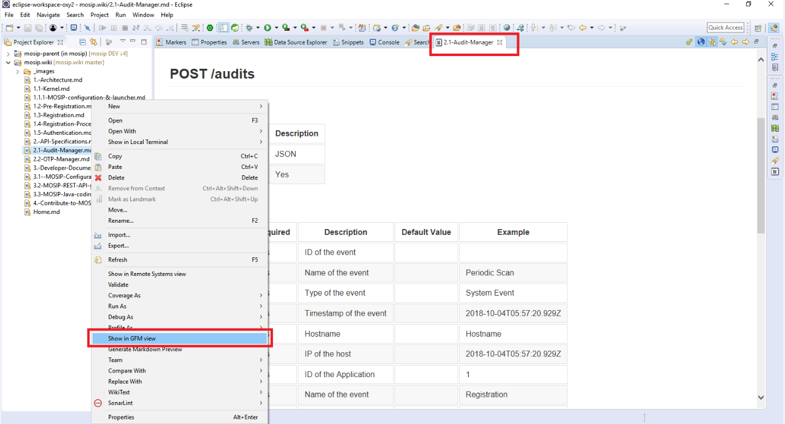
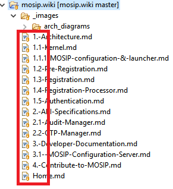
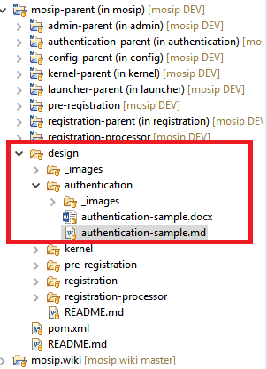
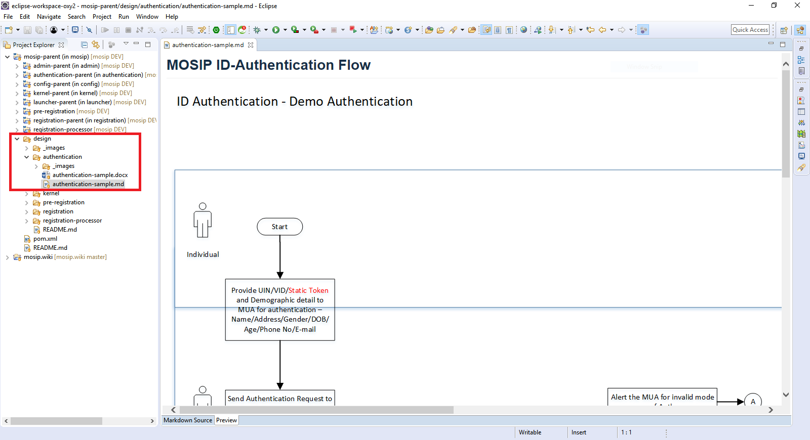

Eclipse Markdown Editor¶
Markdown editor plugin for eclipse¶
Search and Install “ Markdown Text Editor “ form Eclipse Marketplace.

MOSIP WIKI Local Setup¶
MOSIP wiki will have architecture, API specs and developer documentation only. To access the Low level design documents, follow the steps mentioned in the link
Step1: Access MOSIP wiki at link
Step2: Copy repository URL and Git clone the https://github.com/mosip/mosip-docs.wiki.git

Step3: Import it in Eclipse From File -> Open Projects form File System..


Start4: Edit ****.md file (Markdown Source tab) and Preview your changes (Preview tab)


Step5: If you are using GitHub Flavored Markdown Syntax, Right-click .md file then select ''Show in GFM view". Remember to delete generated “.xxx.md.html” preview file after using this option.

Start6: Commit and Push back to GitHub.
NOTE:
Create SubFolder/Add Images inside “_images/SubFolderName/”
Add MDs files prefixed with SectionNumber.SubSectionNumber

Editing Code Repository MD Files (Repository for low level design for sequence diagrams and class diagrams)¶
NOTE:
Each module has own README.md files for installation, runtime environment and setup instructions.
Each module has own UML design MD files inside “design/module” folder and respective diagrams inside “design/module/_images”


Refer to this link for Markdown Syntax guide